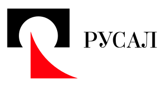
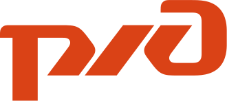
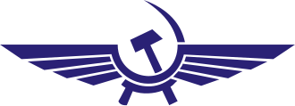

Каталог организаций
Все организации ← ко всем группам

ООО «Мириталь»
Б
Кооператив «Борозда»
П
Кооператив «Покос»
Т2
Фонд «Территория 2020»
Ш
Кооператив «Шукты»

ДАО КООПЕХ
СЛ
Артель «Северный лес»

ЗАО «СтройТехно»
ДД
Благотворительный фонд «Добрый дом»
О
ДАО «ОткрытыйГород»
П
Кооператив «Плодородие»
ВИ
ОАО «Вектор Инжиниринг»
МБ
АНО «Мастерская будущего»
УМ
Артель «Уральские мастера»

ООО «ЭкоПласт»
В
Фонд поддержки волонтёров «Вместе»
ЦК
ДАО «Цифровой кооператив»
РП
Кооператив «Речной порт»

ООО «АгроСтрой»
ЧГ
АНО «Чистый город»
БП
Артель «Байкальский промысел»

ПАО «СеверТранс»
В
Кредитный кооператив «Взаимопомощь»
ПИ
Юридическое бюро «Право и дело»
ЗД
АНО «Здоровье для всех»

ООО «Кооп-Маркет»
ГД
Кооператив «Гостевой двор»
МК
ИП «Медиа Крафт»
АП
Артель «Автосервис Плюс»
СД
АНО «Спортивный двор»
С
ЖСК «Соседи»
С
Энергокооператив «СветСвои»
Э
Содружество кооперативов «Эмилия»
К
ТСЖ «Камень»

АО «Кедр»

АО «Покос»
Новосибирск<НовосибирскaНовосибирск НовосибирскcНовосибирскlНовосибирскaНовосибирскsНовосибирскsНовосибирск=Новосибирск"НовосибирскpНовосибирскtНовосибирскiНовосибирскlНовосибирскeНовосибирск"Новосибирск НовосибирскhНовосибирскrНовосибирскeНовосибирскfНовосибирск=Новосибирск"НовосибирскoНовосибирскrНовосибирскgНовосибирскaНовосибирскnНовосибирскiНовосибирскzНовосибирскaНовосибирскtНовосибирскiНовосибирскoНовосибирскnНовосибирск.НовосибирскhНовосибирскtНовосибирскmНовосибирскlНовосибирск"Новосибирск НовосибирскdНовосибирскaНовосибирскtНовосибирскaНовосибирск-НовосибирскcНовосибирскiНовосибирскtНовосибирскyНовосибирск=Новосибирск"НовосибирскННовосибирскоНовосибирсквНовосибирскоНовосибирсксНовосибирскиНовосибирскбНовосибирскиНовосибирскрНовосибирсксНовосибирсккНовосибирск"Новосибирск НовосибирскdНовосибирскaНовосибирскtНовосибирскaНовосибирск-НовосибирскtНовосибирскyНовосибирскpНовосибирскeНовосибирск=Новосибирск"НовосибирскДНовосибирскеНовосибирскцНовосибирскеНовосибирскнНовосибирсктНовосибирскрНовосибирскаНовосибирсклНовосибирскиНовосибирскзНовосибирскоНовосибирсквНовосибирскаНовосибирскнНовосибирскнНовосибирскыНовосибирскеНовосибирск"Новосибирск НовосибирскdНовосибирскaНовосибирскtНовосибирскaНовосибирск-НовосибирскlНовосибирскeНовосибирскgНовосибирскaНовосибирскlНовосибирск-НовосибирскgНовосибирскrНовосибирскoНовосибирскuНовосибирскpНовосибирск=Новосибирск"НовосибирскДНовосибирскеНовосибирскцНовосибирскеНовосибирскнНовосибирсктНовосибирскрНовосибирскаНовосибирсклНовосибирскиНовосибирскзНовосибирскоНовосибирсквНовосибирскаНовосибирскнНовосибирскнНовосибирскыНовосибирскеНовосибирск"Новосибирск НовосибирскdНовосибирскaНовосибирскtНовосибирскaНовосибирск-НовосибирскtНовосибирскrНовосибирскuНовосибирскsНовосибирскtНовосибирск=Новосибирск"Новосибирск8Новосибирск7Новосибирск"Новосибирск НовосибирскdНовосибирскaНовосибирскtНовосибирскaНовосибирск-НовосибирскcНовосибирскaНовосибирскtНовосибирскeНовосибирскgНовосибирскoНовосибирскrНовосибирскyНовосибирск=Новосибирск"НовосибирскСНовосибирсктНовосибирскрНовосибирскоНовосибирскиНовосибирсктНовосибирскеНовосибирсклНовосибирскьНовосибирсксНовосибирсктНовосибирсквНовосибирскоНовосибирск,Новосибирск НовосибирскнНовосибирскеНовосибирскдНовосибирсквНовосибирскиНовосибирскжНовосибирскиНовосибирскмНовосибирскоНовосибирсксНовосибирсктНовосибирскьНовосибирск"Новосибирск НовосибирскdНовосибирскaНовосибирскtНовосибирскaНовосибирск-НовосибирскsНовосибирскuНовосибирскbНовосибирскcНовосибирскaНовосибирскtНовосибирскeНовосибирскgНовосибирскoНовосибирскrНовосибирскyНовосибирск=Новосибирск"НовосибирскАНовосибирскрНовосибирскхНовосибирскиНовосибирсктНовосибирскеНовосибирсккНовосибирсктНовосибирскоНовосибирскрНовосибирск"Новосибирск НовосибирскdНовосибирскaНовосибирскtНовосибирскaНовосибирск-НовосибирскfНовосибирскaНовосибирскvНовосибирск-НовосибирскiНовосибирскdНовосибирск=Новосибирск"НовосибирскdНовосибирскaНовосибирскoНовосибирск-НовосибирскoНовосибирскtНовосибирскkНовосибирскrНовосибирскyНовосибирскtНовосибирскyНовосибирскyНовосибирскgНовосибирскoНовосибирскrНовосибирскoНовосибирскdНовосибирск"Новосибирск>Новосибирск
Новосибирск Новосибирск Новосибирск Новосибирск Новосибирск Новосибирск Новосибирск Новосибирск Новосибирск Новосибирск Новосибирск Новосибирск Новосибирск<НовосибирскsНовосибирскpНовосибирскaНовосибирскnНовосибирск НовосибирскcНовосибирскlНовосибирскaНовосибирскsНовосибирскsНовосибирск=Новосибирск"НовосибирскfНовосибирскaНовосибирскvНовосибирск-НовосибирскbНовосибирскtНовосибирскnНовосибирск"Новосибирск НовосибирскrНовосибирскoНовосибирскlНовосибирскeНовосибирск=Новосибирск"НовосибирскbНовосибирскuНовосибирскtНовосибирскtНовосибирскoНовосибирскnНовосибирск"Новосибирск НовосибирскtНовосибирскaНовосибирскbНовосибирскiНовосибирскnНовосибирскdНовосибирскeНовосибирскxНовосибирск=Новосибирск"Новосибирск0Новосибирск"Новосибирск НовосибирскaНовосибирскrНовосибирскiНовосибирскaНовосибирск-НовосибирскpНовосибирскrНовосибирскeНовосибирскsНовосибирскsНовосибирскeНовосибирскdНовосибирск=Новосибирск"НовосибирскfНовосибирскaНовосибирскlНовосибирскsНовосибирскeНовосибирск"Новосибирск НовосибирскaНовосибирскrНовосибирскiНовосибирскaНовосибирск-НовосибирскlНовосибирскaНовосибирскbНовосибирскeНовосибирскlНовосибирск=Новосибирск"НовосибирскДНовосибирскоНовосибирскбНовосибирскаНовосибирсквНовосибирскиНовосибирсктНовосибирскьНовосибирск НовосибирсквНовосибирск НовосибирскиНовосибирскзНовосибирскбНовосибирскрНовосибирскаНовосибирскнНовосибирскнНовосибирскоНовосибирскеНовосибирск"Новосибирск НовосибирскtНовосибирскiНовосибирскtНовосибирскlНовосибирскeНовосибирск=Новосибирск"НовосибирскДНовосибирскоНовосибирскбНовосибирскаНовосибирсквНовосибирскиНовосибирсктНовосибирскьНовосибирск НовосибирсквНовосибирск НовосибирскиНовосибирскзНовосибирскбНовосибирскрНовосибирскаНовосибирскнНовосибирскнНовосибирскоНовосибирскеНовосибирск"Новосибирск>Новосибирск<НовосибирскsНовосибирскvНовосибирскgНовосибирск НовосибирскwНовосибирскiНовосибирскdНовосибирскtНовосибирскhНовосибирск=Новосибирск"Новосибирск1Новосибирск6Новосибирск"Новосибирск НовосибирскhНовосибирскeНовосибирскiНовосибирскgНовосибирскhНовосибирскtНовосибирск=Новосибирск"Новосибирск1Новосибирск6Новосибирск"Новосибирск НовосибирскvНовосибирскiНовосибирскeНовосибирскwНовосибирскBНовосибирскoНовосибирскxНовосибирск=Новосибирск"Новосибирск0Новосибирск Новосибирск0Новосибирск Новосибирск2Новосибирск4Новосибирск Новосибирск2Новосибирск4Новосибирск"Новосибирск НовосибирскaНовосибирскrНовосибирскiНовосибирскaНовосибирск-НовосибирскhНовосибирскiНовосибирскdНовосибирскdНовосибирскeНовосибирскnНовосибирск=Новосибирск"НовосибирскtНовосибирскrНовосибирскuНовосибирскeНовосибирск"Новосибирск>Новосибирск<НовосибирскpНовосибирскaНовосибирскtНовосибирскhНовосибирск НовосибирскdНовосибирск=Новосибирск"НовосибирскMНовосибирск1Новосибирск2Новосибирск Новосибирск2Новосибирск0Новосибирск.Новосибирск3НовосибирскlНовосибирск-Новосибирск1Новосибирск.Новосибирск3Новосибирск-Новосибирск1Новосибирск.Новосибирск2НовосибирскCНовосибирск6Новосибирск Новосибирск1Новосибирск5Новосибирск Новосибирск3Новосибирск Новосибирск1Новосибирск2Новосибирск.Новосибирск3Новосибирск Новосибирск3Новосибирск Новосибирск8Новосибирск.Новосибирск9Новосибирск Новосибирск3Новосибирск Новосибирск6Новосибирск.Новосибирск2Новосибирск Новосибирск5Новосибирск.Новосибирск1Новосибирск Новосибирск4Новосибирск Новосибирск7Новосибирск.Новосибирск8Новосибирск Новосибирск4НовосибирскcНовосибирск1Новосибирск.Новосибирск5Новосибирск Новосибирск0Новосибирск Новосибирск3Новосибирск Новосибирск.Новосибирск7Новосибирск Новосибирск4Новосибирск Новосибирск1Новосибирск.Новосибирск9НовосибирскCНовосибирск1Новосибирск2Новосибирск.Новосибирск8Новосибирск Новосибирск4Новосибирск.Новосибирск7Новосибирск Новосибирск1Новосибирск4Новосибирск.Новосибирск3Новосибирск Новосибирск4Новосибирск Новосибирск1Новосибирск5Новосибирск.Новосибирск8Новосибирск Новосибирск4Новосибирск Новосибирск1Новосибирск8Новосибирск.Новосибирск5Новосибирск Новосибирск4Новосибирск Новосибирск2Новосибирск0Новосибирск.Новосибирск6Новосибирск Новосибирск6Новосибирск.Новосибирск2Новосибирск Новосибирск2Новосибирск0Новосибирск.Новосибирск6Новосибирск Новосибирск8Новосибирск.Новосибирск9НовосибирскcНовосибирск0Новосибирск Новосибирск3Новосибирск.Новосибирск4Новосибирск-Новосибирск3Новосибирск Новосибирск6Новосибирск.Новосибирск1Новосибирск-Новосибирск7Новосибирск.Новосибирск7Новосибирск Новосибирск1Новосибирск0Новосибирск.Новосибирск2НовосибирскzНовосибирск"Новосибирск/Новосибирск>Новосибирск<Новосибирск/НовосибирскsНовосибирскvНовосибирскgНовосибирск>Новосибирск<Новосибирск/НовосибирскsНовосибирскpНовосибирскaНовосибирскnНовосибирск>Новосибирск
Новосибирск Новосибирск Новосибирск Новосибирск Новосибирск Новосибирск Новосибирск<НовосибирскdНовосибирскiНовосибирскvНовосибирск НовосибирскcНовосибирскlНовосибирскaНовосибирскsНовосибирскsНовосибирск=Новосибирск"НовосибирскiНовосибирскmНовосибирскgНовосибирск-НовосибирскwНовосибирскrНовосибирскaНовосибирскpНовосибирск"Новосибирск>Новосибирск
Новосибирск Новосибирск Новосибирск Новосибирск Новосибирск Новосибирск Новосибирск Новосибирск Новосибирск<НовосибирскiНовосибирскmНовосибирскgНовосибирск НовосибирскcНовосибирскlНовосибирскaНовосибирскsНовосибирскsНовосибирск=Новосибирск"НовосибирскoНовосибирскrНовосибирскgНовосибирск-НовосибирскlНовосибирскoНовосибирскgНовосибирскoНовосибирск-НовосибирскiНовосибирскmНовосибирскgНовосибирск"Новосибирск НовосибирскsНовосибирскrНовосибирскcНовосибирск=Новосибирск"НовосибирскiНовосибирскmНовосибирскgНовосибирск/НовосибирскoНовосибирскrНовосибирскgНовосибирск-НовосибирскlНовосибирскoНовосибирскgНовосибирскoНовосибирскsНовосибирск/НовосибирскxНовосибирск5Новосибирск.НовосибирскpНовосибирскnНовосибирскgНовосибирск"Новосибирск НовосибирскaНовосибирскlНовосибирскtНовосибирск=Новосибирск"НовосибирскДНовосибирскАНовосибирскОНовосибирск Новосибирск«НовосибирскОНовосибирсктНовосибирсккНовосибирскрНовосибирскыНовосибирсктНовосибирскыНовосибирскйНовосибирскГНовосибирскоНовосибирскрНовосибирскоНовосибирскдНовосибирск»Новосибирск"Новосибирск НовосибирскlНовосибирскoНовосибирскaНовосибирскdНовосибирскiНовосибирскnНовосибирскgНовосибирск=Новосибирск"НовосибирскlНовосибирскaНовосибирскzНовосибирскyНовосибирск"Новосибирск>Новосибирск
Новосибирск Новосибирск Новосибирск Новосибирск Новосибирск Новосибирск Новосибирск Новосибирск Новосибирск<НовосибирскsНовосибирскpНовосибирскaНовосибирскnНовосибирск НовосибирскcНовосибирскlНовосибирскaНовосибирскsНовосибирскsНовосибирск=Новосибирск"НовосибирскlНовосибирскoНовосибирскcНовосибирск-НовосибирскbНовосибирскaНовосибирскrНовосибирск"Новосибирск>Новосибирск📍Новосибирск Новосибирск—Новосибирск<Новосибирск/НовосибирскsНовосибирскpНовосибирскaНовосибирскnНовосибирск>Новосибирск
Новосибирск Новосибирск Новосибирск Новосибирск Новосибирск Новосибирск Новосибирск<Новосибирск/НовосибирскdНовосибирскiНовосибирскvНовосибирск>Новосибирск
Новосибирск Новосибирск Новосибирск Новосибирск Новосибирск Новосибирск Новосибирск<НовосибирскdНовосибирскiНовосибирскvНовосибирск НовосибирскcНовосибирскlНовосибирскaНовосибирскsНовосибирскsНовосибирск=Новосибирск"НовосибирскpНовосибирскnНовосибирскaНовосибирскmНовосибирскeНовосибирск"Новосибирск>НовосибирскДНовосибирскАНовосибирскОНовосибирск Новосибирск«НовосибирскОНовосибирсктНовосибирсккНовосибирскрНовосибирскыНовосибирсктНовосибирскыНовосибирскйНовосибирскГНовосибирскоНовосибирскрНовосибирскоНовосибирскдНовосибирск»Новосибирск<Новосибирск/НовосибирскdНовосибирскiНовосибирскvНовосибирск>Новосибирск
Новосибирск Новосибирск Новосибирск Новосибирск Новосибирск<Новосибирск/НовосибирскaНовосибирск>Новосибирск
Новосибирск

ООО «Поморье»

АО «Взаимопомощь»

АО «Речной порт»
С
ПК «Сыродел»
П
Кооператив «Покос»
Ишим<ИшимaИшим ИшимcИшимlИшимaИшимsИшимsИшим=Ишим"ИшимpИшимtИшимiИшимlИшимeИшим"Ишим ИшимhИшимrИшимeИшимfИшим=Ишим"ИшимoИшимrИшимgИшимaИшимnИшимiИшимzИшимaИшимtИшимiИшимoИшимnИшим.ИшимhИшимtИшимmИшимlИшим"Ишим ИшимdИшимaИшимtИшимaИшим-ИшимcИшимiИшимtИшимyИшим=Ишим"ИшимИИшимшИшимиИшиммИшим"Ишим ИшимdИшимaИшимtИшимaИшим-ИшимtИшимyИшимpИшимeИшим=Ишим"ИшимДИшимеИшимцИшимеИшимнИшимтИшимрИшимаИшимлИшимиИшимзИшимоИшимвИшимаИшимнИшимнИшимыИшимеИшим"Ишим ИшимdИшимaИшимtИшимaИшим-ИшимlИшимeИшимgИшимaИшимlИшим-ИшимgИшимrИшимoИшимuИшимpИшим=Ишим"ИшимДИшимеИшимцИшимеИшимнИшимтИшимрИшимаИшимлИшимиИшимзИшимоИшимвИшимаИшимнИшимнИшимыИшимеИшим"Ишим ИшимdИшимaИшимtИшимaИшим-ИшимtИшимrИшимuИшимsИшимtИшим=Ишим"Ишим9Ишим5Ишим"Ишим ИшимdИшимaИшимtИшимaИшим-ИшимcИшимaИшимtИшимeИшимgИшимoИшимrИшимyИшим=Ишим"ИшимИИшимнИшимфИшимоИшимрИшиммИшимаИшимцИшимиИшимоИшимнИшимнИшимыИшимеИшим ИшимтИшимеИшимхИшимнИшимоИшимлИшимоИшимгИшимиИшимиИшим"Ишим ИшимdИшимaИшимtИшимaИшим-ИшимsИшимuИшимbИшимcИшимaИшимtИшимeИшимgИшимoИшимrИшимyИшим=Ишим"ИшимПИшимрИшимоИшимгИшимрИшимаИшиммИшиммИшимиИшимрИшимоИшимвИшимаИшимнИшимиИшимеИшим,Ишим ИшимРИшимаИшимзИшимрИшимаИшимбИшимоИшимтИшимкИшимаИшим"Ишим ИшимdИшимaИшимtИшимaИшим-ИшимfИшимaИшимvИшим-ИшимiИшимdИшим=Ишим"ИшимdИшимaИшимoИшим-ИшимkИшимoИшимoИшимpИшимeИшимhИшим"Ишим>Ишим
Ишим Ишим Ишим Ишим Ишим Ишим Ишим Ишим Ишим Ишим Ишим Ишим Ишим<ИшимsИшимpИшимaИшимnИшим ИшимcИшимlИшимaИшимsИшимsИшим=Ишим"ИшимfИшимaИшимvИшим-ИшимbИшимtИшимnИшим"Ишим ИшимrИшимoИшимlИшимeИшим=Ишим"ИшимbИшимuИшимtИшимtИшимoИшимnИшим"Ишим ИшимtИшимaИшимbИшимiИшимnИшимdИшимeИшимxИшим=Ишим"Ишим0Ишим"Ишим ИшимaИшимrИшимiИшимaИшим-ИшимpИшимrИшимeИшимsИшимsИшимeИшимdИшим=Ишим"ИшимfИшимaИшимlИшимsИшимeИшим"Ишим ИшимaИшимrИшимiИшимaИшим-ИшимlИшимaИшимbИшимeИшимlИшим=Ишим"ИшимДИшимоИшимбИшимаИшимвИшимиИшимтИшимьИшим ИшимвИшим ИшимиИшимзИшимбИшимрИшимаИшимнИшимнИшимоИшимеИшим"Ишим ИшимtИшимiИшимtИшимlИшимeИшим=Ишим"ИшимДИшимоИшимбИшимаИшимвИшимиИшимтИшимьИшим ИшимвИшим ИшимиИшимзИшимбИшимрИшимаИшимнИшимнИшимоИшимеИшим"Ишим>Ишим<ИшимsИшимvИшимgИшим ИшимwИшимiИшимdИшимtИшимhИшим=Ишим"Ишим1Ишим6Ишим"Ишим ИшимhИшимeИшимiИшимgИшимhИшимtИшим=Ишим"Ишим1Ишим6Ишим"Ишим ИшимvИшимiИшимeИшимwИшимBИшимoИшимxИшим=Ишим"Ишим0Ишим Ишим0Ишим Ишим2Ишим4Ишим Ишим2Ишим4Ишим"Ишим ИшимaИшимrИшимiИшимaИшим-ИшимhИшимiИшимdИшимdИшимeИшимnИшим=Ишим"ИшимtИшимrИшимuИшимeИшим"Ишим>Ишим<ИшимpИшимaИшимtИшимhИшим ИшимdИшим=Ишим"ИшимMИшим1Ишим2Ишим Ишим2Ишим0Ишим.Ишим3ИшимlИшим-Ишим1Ишим.Ишим3Ишим-Ишим1Ишим.Ишим2ИшимCИшим6Ишим Ишим1Ишим5Ишим Ишим3Ишим Ишим1Ишим2Ишим.Ишим3Ишим Ишим3Ишим Ишим8Ишим.Ишим9Ишим Ишим3Ишим Ишим6Ишим.Ишим2Ишим Ишим5Ишим.Ишим1Ишим Ишим4Ишим Ишим7Ишим.Ишим8Ишим Ишим4ИшимcИшим1Ишим.Ишим5Ишим Ишим0Ишим Ишим3Ишим Ишим.Ишим7Ишим Ишим4Ишим Ишим1Ишим.Ишим9ИшимCИшим1Ишим2Ишим.Ишим8Ишим Ишим4Ишим.Ишим7Ишим Ишим1Ишим4Ишим.Ишим3Ишим Ишим4Ишим Ишим1Ишим5Ишим.Ишим8Ишим Ишим4Ишим Ишим1Ишим8Ишим.Ишим5Ишим Ишим4Ишим Ишим2Ишим0Ишим.Ишим6Ишим Ишим6Ишим.Ишим2Ишим Ишим2Ишим0Ишим.Ишим6Ишим Ишим8Ишим.Ишим9ИшимcИшим0Ишим Ишим3Ишим.Ишим4Ишим-Ишим3Ишим Ишим6Ишим.Ишим1Ишим-Ишим7Ишим.Ишим7Ишим Ишим1Ишим0Ишим.Ишим2ИшимzИшим"Ишим/Ишим>Ишим<Ишим/ИшимsИшимvИшимgИшим>Ишим<Ишим/ИшимsИшимpИшимaИшимnИшим>Ишим
Ишим Ишим Ишим Ишим Ишим Ишим Ишим<ИшимdИшимiИшимvИшим ИшимcИшимlИшимaИшимsИшимsИшим=Ишим"ИшимiИшимmИшимgИшим-ИшимwИшимrИшимaИшимpИшим"Ишим>Ишим
Ишим Ишим Ишим Ишим Ишим Ишим Ишим Ишим Ишим<ИшимiИшимmИшимgИшим ИшимcИшимlИшимaИшимsИшимsИшим=Ишим"ИшимoИшимrИшимgИшим-ИшимlИшимoИшимgИшимoИшим-ИшимiИшимmИшимgИшим"Ишим ИшимsИшимrИшимcИшим=Ишим"ИшимiИшимmИшимgИшим/ИшимoИшимrИшимgИшим-ИшимlИшимoИшимgИшимoИшимsИшим/ИшимdИшимaИшимoИшим-ИшимcИшимoИшимoИшимpИшимtИшимeИшимcИшимhИшим.ИшимsИшимvИшимgИшим"Ишим ИшимaИшимlИшимtИшим=Ишим"ИшимДИшимАИшимОИшим ИшимКИшимОИшимОИшимПИшимЕИшимХИшим"Ишим ИшимlИшимoИшимaИшимdИшимiИшимnИшимgИшим=Ишим"ИшимlИшимaИшимzИшимyИшим"Ишим>Ишим
Ишим Ишим Ишим Ишим Ишим Ишим Ишим Ишим Ишим<ИшимsИшимpИшимaИшимnИшим ИшимcИшимlИшимaИшимsИшимsИшим=Ишим"ИшимlИшимoИшимcИшим-ИшимbИшимaИшимrИшим"Ишим>Ишим📍Ишим Ишим—Ишим<Ишим/ИшимsИшимpИшимaИшимnИшим>Ишим
Ишим Ишим Ишим Ишим Ишим Ишим Ишим<Ишим/ИшимdИшимiИшимvИшим>Ишим
Ишим Ишим Ишим Ишим Ишим Ишим Ишим<ИшимdИшимiИшимvИшим ИшимcИшимlИшимaИшимsИшимsИшим=Ишим"ИшимpИшимnИшимaИшимmИшимeИшим"Ишим>ИшимДИшимАИшимОИшим ИшимКИшимОИшимОИшимПИшимЕИшимХИшим<Ишим/ИшимdИшимiИшимvИшим>Ишим
Ишим Ишим Ишим Ишим Ишим<Ишим/ИшимaИшим>Ишим Ишим Ишим Ишим Ишим<ИшимaИшим ИшимcИшимlИшимaИшимsИшимsИшим=Ишим"ИшимpИшимtИшимiИшимlИшимeИшим"Ишим ИшимhИшимrИшимeИшимfИшим=Ишим"ИшимoИшимrИшимgИшимaИшимnИшимiИшимzИшимaИшимtИшимiИшимoИшимnИшим.ИшимhИшимtИшимmИшимlИшим"Ишим ИшимdИшимaИшимtИшимaИшим-ИшимcИшимiИшимtИшимyИшим=Ишим"ИшимКИшимрИшимаИшимсИшимнИшимоИшимяИшимрИшимсИшимкИшим"Ишим ИшимdИшимaИшимtИшимaИшим-ИшимtИшимyИшимpИшимeИшим=Ишим"ИшимКИшимоИшимоИшимпИшимеИшимрИшимаИшимтИшимиИшимвИшимнИшимыИшимеИшим"Ишим ИшимdИшимaИшимtИшимaИшим-ИшимlИшимeИшимgИшимaИшимlИшим-ИшимgИшимrИшимoИшимuИшимpИшим=Ишим"ИшимКИшимоИшимоИшимпИшимеИшимрИшимаИшимтИшимиИшимвИшимнИшимыИшимеИшим"Ишим ИшимdИшимaИшимtИшимaИшим-ИшимtИшимrИшимuИшимsИшимtИшим=Ишим"Ишим7Ишим9Ишим"Ишим ИшимdИшимaИшимtИшимaИшим-ИшимcИшимaИшимtИшимeИшимgИшимoИшимrИшимyИшим=Ишим"ИшимПИшимрИшимоИшимиИшимзИшимвИшимоИшимдИшимсИшимтИшимвИшимоИшим,Ишим ИшимсИшимеИшимрИшимвИшимиИшимсИшимнИшимоИшимеИшим ИшимоИшимбИшимсИшимлИшимуИшимжИшимиИшимвИшимаИшимнИшимиИшимеИшим"Ишим ИшимdИшимaИшимtИшимaИшим-ИшимsИшимuИшимbИшимcИшимaИшимtИшимeИшимgИшимoИшимrИшимyИшим=Ишим"ИшимИИшимнИшимжИшимеИшимнИшимеИшимрИшим-ИшимтИшимеИшимхИшимнИшимоИшимлИшимоИшимгИшим"Ишим ИшимdИшимaИшимtИшимaИшим-ИшимfИшимaИшимvИшим-ИшимiИшимdИшим=Ишим"ИшимaИшимrИшимtИшимeИшимlИшим-ИшимsИшимeИшимvИшимeИшимrИшимnИшимyИшимyИшим-ИшимlИшимeИшимsИшим"Ишим>Ишим
Ишим Ишим Ишим Ишим Ишим Ишим Ишим Ишим Ишим Ишим Ишим Ишим Ишим<ИшимsИшимpИшимaИшимnИшим ИшимcИшимlИшимaИшимsИшимsИшим=Ишим"ИшимfИшимaИшимvИшим-ИшимbИшимtИшимnИшим"Ишим ИшимrИшимoИшимlИшимeИшим=Ишим"ИшимbИшимuИшимtИшимtИшимoИшимnИшим"Ишим ИшимtИшимaИшимbИшимiИшимnИшимdИшимeИшимxИшим=Ишим"Ишим0Ишим"Ишим ИшимaИшимrИшимiИшимaИшим-ИшимpИшимrИшимeИшимsИшимsИшимeИшимdИшим=Ишим"ИшимfИшимaИшимlИшимsИшимeИшим"Ишим ИшимaИшимrИшимiИшимaИшим-ИшимlИшимaИшимbИшимeИшимlИшим=Ишим"ИшимДИшимоИшимбИшимаИшимвИшимиИшимтИшимьИшим ИшимвИшим ИшимиИшимзИшимбИшимрИшимаИшимнИшимнИшимоИшимеИшим"Ишим ИшимtИшимiИшимtИшимlИшимeИшим=Ишим"ИшимДИшимоИшимбИшимаИшимвИшимиИшимтИшимьИшим ИшимвИшим ИшимиИшимзИшимбИшимрИшимаИшимнИшимнИшимоИшимеИшим"Ишим>Ишим<ИшимsИшимvИшимgИшим ИшимwИшимiИшимdИшимtИшимhИшим=Ишим"Ишим1Ишим6Ишим"Ишим ИшимhИшимeИшимiИшимgИшимhИшимtИшим=Ишим"Ишим1Ишим6Ишим"Ишим ИшимvИшимiИшимeИшимwИшимBИшимoИшимxИшим=Ишим"Ишим0Ишим Ишим0Ишим Ишим2Ишим4Ишим Ишим2Ишим4Ишим"Ишим ИшимaИшимrИшимiИшимaИшим-ИшимhИшимiИшимdИшимdИшимeИшимnИшим=Ишим"ИшимtИшимrИшимuИшимeИшим"Ишим>Ишим<ИшимpИшимaИшимtИшимhИшим ИшимdИшим=Ишим"ИшимMИшим1Ишим2Ишим Ишим2Ишим0Ишим.Ишим3ИшимlИшим-Ишим1Ишим.Ишим3Ишим-Ишим1Ишим.Ишим2ИшимCИшим6Ишим Ишим1Ишим5Ишим Ишим3Ишим Ишим1Ишим2Ишим.Ишим3Ишим Ишим3Ишим Ишим8Ишим.Ишим9Ишим Ишим3Ишим Ишим6Ишим.Ишим2Ишим Ишим5Ишим.Ишим1Ишим Ишим4Ишим Ишим7Ишим.Ишим8Ишим Ишим4ИшимcИшим1Ишим.Ишим5Ишим Ишим0Ишим Ишим3Ишим Ишим.Ишим7Ишим Ишим4Ишим Ишим1Ишим.Ишим9ИшимCИшим1Ишим2Ишим.Ишим8Ишим Ишим4Ишим.Ишим7Ишим Ишим1Ишим4Ишим.Ишим3Ишим Ишим4Ишим Ишим1Ишим5Ишим.Ишим8Ишим Ишим4Ишим Ишим1Ишим8Ишим.Ишим5Ишим Ишим4Ишим Ишим2Ишим0Ишим.Ишим6Ишим Ишим6Ишим.Ишим2Ишим Ишим2Ишим0Ишим.Ишим6Ишим Ишим8Ишим.Ишим9ИшимcИшим0Ишим Ишим3Ишим.Ишим4Ишим-Ишим3Ишим Ишим6Ишим.Ишим1Ишим-Ишим7Ишим.Ишим7Ишим Ишим1Ишим0Ишим.Ишим2ИшимzИшим"Ишим/Ишим>Ишим<Ишим/ИшимsИшимvИшимgИшим>Ишим<Ишим/ИшимsИшимpИшимaИшимnИшим>Ишим
Ишим Ишим Ишим Ишим Ишим Ишим Ишим<ИшимdИшимiИшимvИшим ИшимcИшимlИшимaИшимsИшимsИшим=Ишим"ИшимiИшимmИшимgИшим-ИшимwИшимrИшимaИшимpИшим"Ишим>Ишим
Ишим Ишим Ишим Ишим Ишим Ишим Ишим Ишим Ишим<ИшимiИшимmИшимgИшим ИшимcИшимlИшимaИшимsИшимsИшим=Ишим"ИшимoИшимrИшимgИшим-ИшимlИшимoИшимgИшимoИшим-ИшимiИшимmИшимgИшим"Ишим ИшимsИшимrИшимcИшим=Ишим"ИшимiИшимmИшимgИшим/ИшимoИшимrИшимgИшим-ИшимlИшимoИшимgИшимoИшимsИшим/ИшимrИшимoИшимsИшимnИшимeИшимfИшимtИшим.ИшимpИшимnИшимgИшим"Ишим ИшимaИшимlИшимtИшим=Ишим"ИшимАИшимрИшимтИшимеИшимлИшимьИшим Ишим«ИшимСИшимеИшимвИшимеИшимрИшимнИшимыИшимйИшим ИшимлИшимеИшимсИшим»Ишим"Ишим ИшимlИшимoИшимaИшимdИшимiИшимnИшимgИшим=Ишим"ИшимlИшимaИшимzИшимyИшим"Ишим>Ишим
Ишим Ишим Ишим Ишим Ишим Ишим Ишим Ишим Ишим<ИшимsИшимpИшимaИшимnИшим ИшимcИшимlИшимaИшимsИшимsИшим=Ишим"ИшимlИшимoИшимcИшим-ИшимbИшимaИшимrИшим"Ишим>Ишим📍Ишим ИшимКИшимрИшимаИшимсИшимнИшимоИшимяИшимрИшимсИшимкИшим<Ишим/ИшимsИшимpИшимaИшимnИшим>Ишим
Ишим Ишим Ишим Ишим Ишим Ишим Ишим<Ишим/ИшимdИшимiИшимvИшим>Ишим
Ишим Ишим Ишим Ишим Ишим Ишим Ишим<ИшимdИшимiИшимvИшим ИшимcИшимlИшимaИшимsИшимsИшим=Ишим"ИшимpИшимnИшимaИшимmИшимeИшим"Ишим>ИшимАИшимрИшимтИшимеИшимлИшимьИшим Ишим«ИшимСИшимеИшимвИшимеИшимрИшимнИшимыИшимйИшим ИшимлИшимеИшимсИшим»Ишим<Ишим/ИшимdИшимiИшимvИшим>Ишим
Ишим Ишим Ишим Ишим Ишим<Ишим/ИшимaИшим>Ишим
Ишим

АО «Родник»

АО «Шукты»
Т
Фонд «Табун»
П
ТСЖ «Покос»
К
Фонд «Кузница»
Т
ПК «Ткач»
Л
ПК «Лесное»
Г
ТСЖ «Горный»
Д
Фонд «Двор»
П
ТСЖ «Плотник»
З
ТСЖ «Зерно»
П
СПК «Пасека»
А
СПК «Артель»

ООО «Улей»
С
ПК «СветСвои»
Б
Кооператив «Борозда»
М
ТСЖ «Мельница»
Х
ПК «Хмель»

ООО «Тайга»
АО «Пасека»
ТК
ТСЖ «Тёплый край»
П
Фонд «Плотник»

АО «Пасека»
К
СПК «Камень»
П
ПК «Пасека»
АО «Гостевой двор»

ООО «Пасека»
З
ПК «Заря»
С
ТСЖ «Соль»
Ш
Фонд «Шукты»
С
Кооператив «СветСвои»
В
СПК «Взаимопомощь»
В
ТСЖ «Взаимопомощь»
РП
ТСЖ «Речной порт»
Л
ПК «Лесное»
С
ПК «СветСвои»
Я
Фонд «Ягода»
К
Фонд «Колос»
ГД
ПК «Гостевой двор»
МП
ПК «Молочный путь»
Г
Кооператив «Гончар»
С
СПК «СветСвои»

АО «Родник»
С
СПК «Степь»
К
ПК «Кедр»

ООО «Гончар»
З
Кооператив «Заря»
Нижний Тагил<Нижний ТагилaНижний Тагил Нижний ТагилcНижний ТагилlНижний ТагилaНижний ТагилsНижний ТагилsНижний Тагил=Нижний Тагил"Нижний ТагилpНижний ТагилtНижний ТагилiНижний ТагилlНижний ТагилeНижний Тагил"Нижний Тагил Нижний ТагилhНижний ТагилrНижний ТагилeНижний ТагилfНижний Тагил=Нижний Тагил"Нижний ТагилoНижний ТагилrНижний ТагилgНижний ТагилaНижний ТагилnНижний ТагилiНижний ТагилzНижний ТагилaНижний ТагилtНижний ТагилiНижний ТагилoНижний ТагилnНижний Тагил.Нижний ТагилhНижний ТагилtНижний ТагилmНижний ТагилlНижний Тагил"Нижний Тагил Нижний ТагилdНижний ТагилaНижний ТагилtНижний ТагилaНижний Тагил-Нижний ТагилcНижний ТагилiНижний ТагилtНижний ТагилyНижний Тагил=Нижний Тагил"Нижний ТагилННижний ТагилиНижний ТагилжНижний ТагилнНижний ТагилиНижний ТагилйНижний Тагил Нижний ТагилТНижний ТагилаНижний ТагилгНижний ТагилиНижний ТагиллНижний Тагил"Нижний Тагил Нижний ТагилdНижний ТагилaНижний ТагилtНижний ТагилaНижний Тагил-Нижний ТагилtНижний ТагилyНижний ТагилpНижний ТагилeНижний Тагил=Нижний Тагил"Нижний ТагилДНижний ТагилеНижний ТагилцНижний ТагилеНижний ТагилнНижний ТагилтНижний ТагилрНижний ТагилаНижний ТагиллНижний ТагилиНижний ТагилзНижний ТагилоНижний ТагилвНижний ТагилаНижний ТагилнНижний ТагилнНижний ТагилыНижний ТагилеНижний Тагил"Нижний Тагил Нижний ТагилdНижний ТагилaНижний ТагилtНижний ТагилaНижний Тагил-Нижний ТагилlНижний ТагилeНижний ТагилgНижний ТагилaНижний ТагилlНижний Тагил-Нижний ТагилgНижний ТагилrНижний ТагилoНижний ТагилuНижний ТагилpНижний Тагил=Нижний Тагил"Нижний ТагилДНижний ТагилеНижний ТагилцНижний ТагилеНижний ТагилнНижний ТагилтНижний ТагилрНижний ТагилаНижний ТагиллНижний ТагилиНижний ТагилзНижний ТагилоНижний ТагилвНижний ТагилаНижний ТагилнНижний ТагилнНижний ТагилыНижний ТагилеНижний Тагил"Нижний Тагил Нижний ТагилdНижний ТагилaНижний ТагилtНижний ТагилaНижний Тагил-Нижний ТагилtНижний ТагилrНижний ТагилuНижний ТагилsНижний ТагилtНижний Тагил=Нижний Тагил"Нижний Тагил9Нижний Тагил2Нижний Тагил"Нижний Тагил Нижний ТагилdНижний ТагилaНижний ТагилtНижний ТагилaНижний Тагил-Нижний ТагилcНижний ТагилaНижний ТагилtНижний ТагилeНижний ТагилgНижний ТагилoНижний ТагилrНижний ТагилyНижний Тагил=Нижний Тагил"Нижний ТагилИНижний ТагилнНижний ТагилфНижний ТагилоНижний ТагилрНижний ТагилмНижний ТагилаНижний ТагилцНижний ТагилиНижний ТагилоНижний ТагилнНижний ТагилнНижний ТагилыНижний ТагилеНижний Тагил Нижний ТагилтНижний ТагилеНижний ТагилхНижний ТагилнНижний ТагилоНижний ТагиллНижний ТагилоНижний ТагилгНижний ТагилиНижний ТагилиНижний Тагил"Нижний Тагил Нижний ТагилdНижний ТагилaНижний ТагилtНижний ТагилaНижний Тагил-Нижний ТагилsНижний ТагилuНижний ТагилbНижний ТагилcНижний ТагилaНижний ТагилtНижний ТагилeНижний ТагилgНижний ТагилoНижний ТагилrНижний ТагилyНижний Тагил=Нижний Тагил"Нижний ТагилПНижний ТагилрНижний ТагилоНижний ТагилгНижний ТагилрНижний ТагилаНижний ТагилмНижний ТагилмНижний ТагилиНижний ТагилрНижний ТагилоНижний ТагилвНижний ТагилаНижний ТагилнНижний ТагилиНижний ТагилеНижний Тагил,Нижний Тагил Нижний ТагилРНижний ТагилаНижний ТагилзНижний ТагилрНижний ТагилаНижний ТагилбНижний ТагилоНижний ТагилтНижний ТагилкНижний ТагилаНижний Тагил"Нижний Тагил Нижний ТагилdНижний ТагилaНижний ТагилtНижний ТагилaНижний Тагил-Нижний ТагилfНижний ТагилaНижний ТагилvНижний Тагил-Нижний ТагилiНижний ТагилdНижний Тагил=Нижний Тагил"Нижний ТагилdНижний ТагилaНижний ТагилoНижний Тагил-Нижний ТагилtНижний ТагилsНижний ТагилiНижний ТагилfНижний ТагилrНижний ТагилoНижний ТагилvНижний ТагилoНижний ТагилyНижний Тагил-Нижний ТагилkНижний ТагилoНижний ТагилoНижний ТагилpНижний ТагилeНижний ТагилrНижний ТагилaНижний ТагилtНижний ТагилiНижний ТагилvНижний Тагил"Нижний Тагил>Нижний Тагил
Нижний Тагил Нижний Тагил Нижний Тагил Нижний Тагил Нижний Тагил Нижний Тагил Нижний Тагил Нижний Тагил Нижний Тагил Нижний Тагил Нижний Тагил Нижний Тагил Нижний Тагил<Нижний ТагилsНижний ТагилpНижний ТагилaНижний ТагилnНижний Тагил Нижний ТагилcНижний ТагилlНижний ТагилaНижний ТагилsНижний ТагилsНижний Тагил=Нижний Тагил"Нижний ТагилfНижний ТагилaНижний ТагилvНижний Тагил-Нижний ТагилbНижний ТагилtНижний ТагилnНижний Тагил"Нижний Тагил Нижний ТагилrНижний ТагилoНижний ТагилlНижний ТагилeНижний Тагил=Нижний Тагил"Нижний ТагилbНижний ТагилuНижний ТагилtНижний ТагилtНижний ТагилoНижний ТагилnНижний Тагил"Нижний Тагил Нижний ТагилtНижний ТагилaНижний ТагилbНижний ТагилiНижний ТагилnНижний ТагилdНижний ТагилeНижний ТагилxНижний Тагил=Нижний Тагил"Нижний Тагил0Нижний Тагил"Нижний Тагил Нижний ТагилaНижний ТагилrНижний ТагилiНижний ТагилaНижний Тагил-Нижний ТагилpНижний ТагилrНижний ТагилeНижний ТагилsНижний ТагилsНижний ТагилeНижний ТагилdНижний Тагил=Нижний Тагил"Нижний ТагилfНижний ТагилaНижний ТагилlНижний ТагилsНижний ТагилeНижний Тагил"Нижний Тагил Нижний ТагилaНижний ТагилrНижний ТагилiНижний ТагилaНижний Тагил-Нижний ТагилlНижний ТагилaНижний ТагилbНижний ТагилeНижний ТагилlНижний Тагил=Нижний Тагил"Нижний ТагилДНижний ТагилоНижний ТагилбНижний ТагилаНижний ТагилвНижний ТагилиНижний ТагилтНижний ТагильНижний Тагил Нижний ТагилвНижний Тагил Нижний ТагилиНижний ТагилзНижний ТагилбНижний ТагилрНижний ТагилаНижний ТагилнНижний ТагилнНижний ТагилоНижний ТагилеНижний Тагил"Нижний Тагил Нижний ТагилtНижний ТагилiНижний ТагилtНижний ТагилlНижний ТагилeНижний Тагил=Нижний Тагил"Нижний ТагилДНижний ТагилоНижний ТагилбНижний ТагилаНижний ТагилвНижний ТагилиНижний ТагилтНижний ТагильНижний Тагил Нижний ТагилвНижний Тагил Нижний ТагилиНижний ТагилзНижний ТагилбНижний ТагилрНижний ТагилаНижний ТагилнНижний ТагилнНижний ТагилоНижний ТагилеНижний Тагил"Нижний Тагил>Нижний Тагил<Нижний ТагилsНижний ТагилvНижний ТагилgНижний Тагил Нижний ТагилwНижний ТагилiНижний ТагилdНижний ТагилtНижний ТагилhНижний Тагил=Нижний Тагил"Нижний Тагил1Нижний Тагил6Нижний Тагил"Нижний Тагил Нижний ТагилhНижний ТагилeНижний ТагилiНижний ТагилgНижний ТагилhНижний ТагилtНижний Тагил=Нижний Тагил"Нижний Тагил1Нижний Тагил6Нижний Тагил"Нижний Тагил Нижний ТагилvНижний ТагилiНижний ТагилeНижний ТагилwНижний ТагилBНижний ТагилoНижний ТагилxНижний Тагил=Нижний Тагил"Нижний Тагил0Нижний Тагил Нижний Тагил0Нижний Тагил Нижний Тагил2Нижний Тагил4Нижний Тагил Нижний Тагил2Нижний Тагил4Нижний Тагил"Нижний Тагил Нижний ТагилaНижний ТагилrНижний ТагилiНижний ТагилaНижний Тагил-Нижний ТагилhНижний ТагилiНижний ТагилdНижний ТагилdНижний ТагилeНижний ТагилnНижний Тагил=Нижний Тагил"Нижний ТагилtНижний ТагилrНижний ТагилuНижний ТагилeНижний Тагил"Нижний Тагил>Нижний Тагил<Нижний ТагилpНижний ТагилaНижний ТагилtНижний ТагилhНижний Тагил Нижний ТагилdНижний Тагил=Нижний Тагил"Нижний ТагилMНижний Тагил1Нижний Тагил2Нижний Тагил Нижний Тагил2Нижний Тагил0Нижний Тагил.Нижний Тагил3Нижний ТагилlНижний Тагил-Нижний Тагил1Нижний Тагил.Нижний Тагил3Нижний Тагил-Нижний Тагил1Нижний Тагил.Нижний Тагил2Нижний ТагилCНижний Тагил6Нижний Тагил Нижний Тагил1Нижний Тагил5Нижний Тагил Нижний Тагил3Нижний Тагил Нижний Тагил1Нижний Тагил2Нижний Тагил.Нижний Тагил3Нижний Тагил Нижний Тагил3Нижний Тагил Нижний Тагил8Нижний Тагил.Нижний Тагил9Нижний Тагил Нижний Тагил3Нижний Тагил Нижний Тагил6Нижний Тагил.Нижний Тагил2Нижний Тагил Нижний Тагил5Нижний Тагил.Нижний Тагил1Нижний Тагил Нижний Тагил4Нижний Тагил Нижний Тагил7Нижний Тагил.Нижний Тагил8Нижний Тагил Нижний Тагил4Нижний ТагилcНижний Тагил1Нижний Тагил.Нижний Тагил5Нижний Тагил Нижний Тагил0Нижний Тагил Нижний Тагил3Нижний Тагил Нижний Тагил.Нижний Тагил7Нижний Тагил Нижний Тагил4Нижний Тагил Нижний Тагил1Нижний Тагил.Нижний Тагил9Нижний ТагилCНижний Тагил1Нижний Тагил2Нижний Тагил.Нижний Тагил8Нижний Тагил Нижний Тагил4Нижний Тагил.Нижний Тагил7Нижний Тагил Нижний Тагил1Нижний Тагил4Нижний Тагил.Нижний Тагил3Нижний Тагил Нижний Тагил4Нижний Тагил Нижний Тагил1Нижний Тагил5Нижний Тагил.Нижний Тагил8Нижний Тагил Нижний Тагил4Нижний Тагил Нижний Тагил1Нижний Тагил8Нижний Тагил.Нижний Тагил5Нижний Тагил Нижний Тагил4Нижний Тагил Нижний Тагил2Нижний Тагил0Нижний Тагил.Нижний Тагил6Нижний Тагил Нижний Тагил6Нижний Тагил.Нижний Тагил2Нижний Тагил Нижний Тагил2Нижний Тагил0Нижний Тагил.Нижний Тагил6Нижний Тагил Нижний Тагил8Нижний Тагил.Нижний Тагил9Нижний ТагилcНижний Тагил0Нижний Тагил Нижний Тагил3Нижний Тагил.Нижний Тагил4Нижний Тагил-Нижний Тагил3Нижний Тагил Нижний Тагил6Нижний Тагил.Нижний Тагил1Нижний Тагил-Нижний Тагил7Нижний Тагил.Нижний Тагил7Нижний Тагил Нижний Тагил1Нижний Тагил0Нижний Тагил.Нижний Тагил2Нижний ТагилzНижний Тагил"Нижний Тагил/Нижний Тагил>Нижний Тагил<Нижний Тагил/Нижний ТагилsНижний ТагилvНижний ТагилgНижний Тагил>Нижний Тагил<Нижний Тагил/Нижний ТагилsНижний ТагилpНижний ТагилaНижний ТагилnНижний Тагил>Нижний Тагил
Нижний Тагил Нижний Тагил Нижний Тагил Нижний Тагил Нижний Тагил Нижний Тагил Нижний Тагил<Нижний ТагилdНижний ТагилiНижний ТагилvНижний Тагил Нижний ТагилcНижний ТагилlНижний ТагилaНижний ТагилsНижний ТагилsНижний Тагил=Нижний Тагил"Нижний ТагилiНижний ТагилmНижний ТагилgНижний Тагил-Нижний ТагилwНижний ТагилrНижний ТагилaНижний ТагилpНижний Тагил"Нижний Тагил>Нижний Тагил
Нижний Тагил Нижний Тагил Нижний Тагил Нижний Тагил Нижний Тагил Нижний Тагил Нижний Тагил Нижний Тагил Нижний Тагил<Нижний ТагилiНижний ТагилmНижний ТагилgНижний Тагил Нижний ТагилcНижний ТагилlНижний ТагилaНижний ТагилsНижний ТагилsНижний Тагил=Нижний Тагил"Нижний ТагилoНижний ТагилrНижний ТагилgНижний Тагил-Нижний ТагилlНижний ТагилoНижний ТагилgНижний ТагилoНижний Тагил-Нижний ТагилiНижний ТагилmНижний ТагилgНижний Тагил"Нижний Тагил Нижний ТагилsНижний ТагилrНижний ТагилcНижний Тагил=Нижний Тагил"Нижний ТагилiНижний ТагилmНижний ТагилgНижний Тагил/Нижний ТагилoНижний ТагилrНижний ТагилgНижний Тагил-Нижний ТагилlНижний ТагилoНижний ТагилgНижний ТагилoНижний ТагилsНижний Тагил/Нижний ТагилkНижний ТагилaНижний ТагилmНижний ТагилaНижний ТагилzНижний Тагил.Нижний ТагилpНижний ТагилnНижний ТагилgНижний Тагил"Нижний Тагил Нижний ТагилaНижний ТагилlНижний ТагилtНижний Тагил=Нижний Тагил"Нижний ТагилДНижний ТагилАНижний ТагилОНижний Тагил Нижний Тагил«Нижний ТагилЦНижний ТагилиНижний ТагилфНижний ТагилрНижний ТагилоНижний ТагилвНижний ТагилоНижний ТагилйНижний Тагил Нижний ТагилкНижний ТагилоНижний ТагилоНижний ТагилпНижний ТагилеНижний ТагилрНижний ТагилаНижний ТагилтНижний ТагилиНижний ТагилвНижний Тагил»Нижний Тагил"Нижний Тагил Нижний ТагилlНижний ТагилoНижний ТагилaНижний ТагилdНижний ТагилiНижний ТагилnНижний ТагилgНижний Тагил=Нижний Тагил"Нижний ТагилlНижний ТагилaНижний ТагилzНижний ТагилyНижний Тагил"Нижний Тагил>Нижний Тагил
Нижний Тагил Нижний Тагил Нижний Тагил Нижний Тагил Нижний Тагил Нижний Тагил Нижний Тагил Нижний Тагил Нижний Тагил<Нижний ТагилsНижний ТагилpНижний ТагилaНижний ТагилnНижний Тагил Нижний ТагилcНижний ТагилlНижний ТагилaНижний ТагилsНижний ТагилsНижний Тагил=Нижний Тагил"Нижний ТагилlНижний ТагилoНижний ТагилcНижний Тагил-Нижний ТагилbНижний ТагилaНижний ТагилrНижний Тагил"Нижний Тагил>Нижний Тагил📍Нижний Тагил Нижний Тагил—Нижний Тагил<Нижний Тагил/Нижний ТагилsНижний ТагилpНижний ТагилaНижний ТагилnНижний Тагил>Нижний Тагил
Нижний Тагил Нижний Тагил Нижний Тагил Нижний Тагил Нижний Тагил Нижний Тагил Нижний Тагил<Нижний Тагил/Нижний ТагилdНижний ТагилiНижний ТагилvНижний Тагил>Нижний Тагил
Нижний Тагил Нижний Тагил Нижний Тагил Нижний Тагил Нижний Тагил Нижний Тагил Нижний Тагил<Нижний ТагилdНижний ТагилiНижний ТагилvНижний Тагил Нижний ТагилcНижний ТагилlНижний ТагилaНижний ТагилsНижний ТагилsНижний Тагил=Нижний Тагил"Нижний ТагилpНижний ТагилnНижний ТагилaНижний ТагилmНижний ТагилeНижний Тагил"Нижний Тагил>Нижний ТагилДНижний ТагилАНижний ТагилОНижний Тагил Нижний Тагил«Нижний ТагилЦНижний ТагилиНижний ТагилфНижний ТагилрНижний ТагилоНижний ТагилвНижний ТагилоНижний ТагилйНижний Тагил Нижний ТагилкНижний ТагилоНижний ТагилоНижний ТагилпНижний ТагилеНижний ТагилрНижний ТагилаНижний ТагилтНижний ТагилиНижний ТагилвНижний Тагил»Нижний Тагил<Нижний Тагил/Нижний ТагилdНижний ТагилiНижний ТагилvНижний Тагил>Нижний Тагил
Нижний Тагил Нижний Тагил Нижний Тагил Нижний Тагил Нижний Тагил<Нижний Тагил/Нижний ТагилaНижний Тагил>Нижний Тагил
Нижний Тагил
Д
СПК «Двор»
З
Кооператив «Зерно»

АО «Гончар»
Д
СПК «Двор»

АО «Лесное»
ТК
ТСЖ «Тёплый край»
СЛ
ПК «Северный лён»
ТК
Кооператив «Тёплый край»
Д
Фонд «Двор»
П
Кооператив «Поморье»
ООО «Рыбак»
П
ПК «Поморье»
Ничего не нашлось по заданным фильтрам. Сбросить фильтры
Фильтр